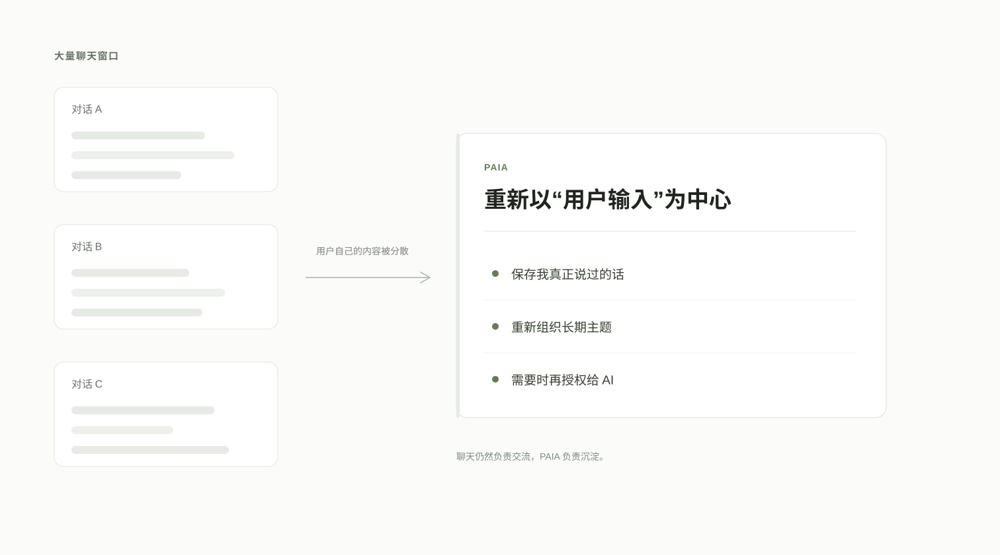
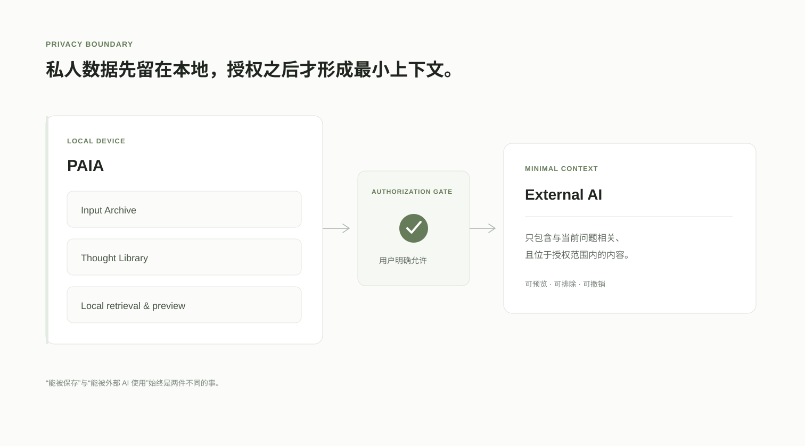

PERSONAL AI INPUT ARCHIVE
Your private archive
for what you say to AI.
保存、整理，并重新阅读你在 AI 中表达过的信息和想法。
01 · Problem
AI 记住了对话，
但用户自己的信息仍然散落其中。
长期使用 ChatGPT 等 AI 后，事实、判断、偏好、决定和想法会分散在大量聊天窗口里。聊天历史适合继续对话，却并不天然适合重新阅读自己。
PAIA 不试图成为另一个聊天客户端。它把注意力重新放回用户自己的输入：先保存，再组织，最后只在用户明确允许时把必要内容提供给未来 AI。

02 · Product
从输入档案，到思想，再到可授权的上下文。
03 · Input Archive
先保存用户真正说过的话。
输入按真实会话沉淀为连续档案。用户可以搜索、编辑和回看，但来源事实与用户后续工作保持分离。
- 连续阅读，而不是重新模拟聊天
- 用户编辑不会被后续同步静默覆盖
- 来源、时间与版本保持可追溯


04 · Thought Library
把聊天窗口里的碎片，重新变成长期思想。
Thought Library 不按照聊天窗口组织，而是把跨会话内容聚合为长期 Topic。默认视图尽量忠实于原始表达，AI 整理只作为可切换的派生层。
- Topic 是长期主题，而不是一句话一个标签
- 原话层始终存在，AI 不覆盖用户思想
- 阅读优先，系统处理状态尽量退到后台

原始思路历程
AI 整理


保留用户自己的语言、时间与思考过程
向下继续阅读，内容逐渐转化为更清晰的 AI 综合视图
05 · AI Context
不是让 AI 随时读取一切，而是让用户决定它能知道什么。
AI Context 建立在 Thought Library 之上。授权、排除、检索和上下文预算都先在本地完成；真正复制或导出上下文，需要用户明确操作。
- 默认不授权，拒绝与排除优先
- 本地检索与 Context Preview
- 来源可追溯，可随时撤销

06 · Privacy
Local-first by design.
当前产品以 Chrome Extension 形式运行，核心数据默认保存在本机。历史补全、检索、备份和多数组织逻辑优先在本地完成。
涉及 AI 的动作采用明确的用户控制与最小数据边界。这个公开展示网站本身不连接 PAIA 数据，也不设置分析脚本或跟踪器。

PAIA · PRIVATE BETA
你一路对 AI 说过的话，
应该有一个真正属于自己的地方。
PAIA 保存你说过的话，让散落的输入重新成为可以阅读、回看的长期记录。只有你明确选择的部分，才会成为 AI 的上下文。